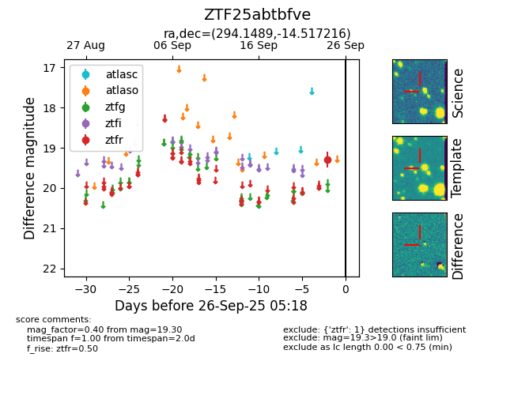

FINK: ZTF25abtbfve
Lasair: ZTF25abtbfve
ALeRCE: ZTF25abtbfve
ZTF25abtbfve (ztf,fink)
equatorial (ra, dec) = (294.1489,-14.51722)
galactic (l, b) = (24.7392,-16.43741)

last ztfr=19.30
1 ztfr detections